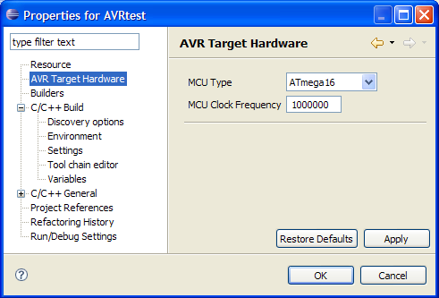

For each project the toolchain maintains two options for the target processor hardware, the processor type and its clock speed. The processor type is passed as a command line option to all tools requiring the processor type. The clock speed is only passed onto the compiler as a #define F_CPU xxxxxxxxUL. Its up to the application to do anything with this value, e.g. adjust its internal timings.
The options can be changed via the project properties.
To change the target processor select the project properties and expand AVR Target Hardware.

Add / Remove AVR specific Tools from the Toolchain